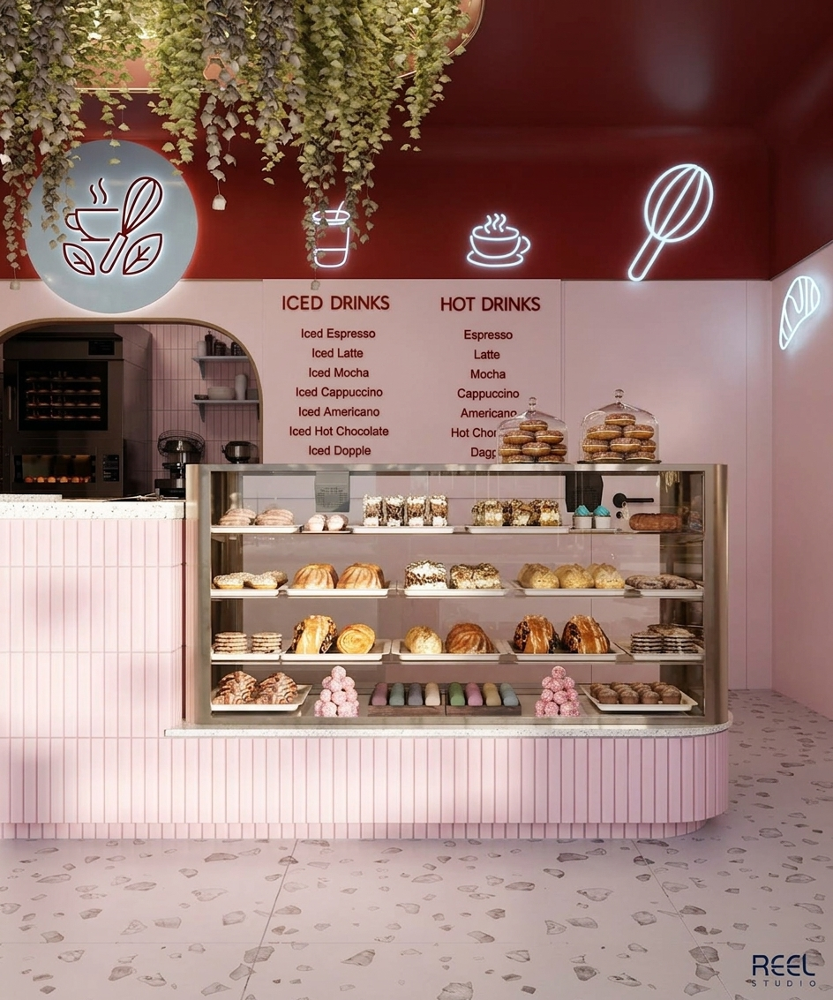

MAISON DOUCE
Um pedacinho da tradição francesa criado para transformar momentos simples em experiências especiais.

A Maison Douce nasceu do fascínio pelas clássicas confeitarias parisienses. Nosso compromisso é trazer o charme e a autenticidade da pâtisserie francesa para a sua mesa.
Cada produto é preparado com atenção aos detalhes, valorizando processos artesanais e ingredientes selecionados para proporcionar sabores delicados e especiais.
Entre croissants, macarons, éclairs, baguettes e outras especialidades, buscamos preservar a essência da tradição francesa em cada receita.